소방설비기사(전기분야) (2014-03-02 기출문제)
1과목: 소방원론
1. 경유화재가 발생했을 때 주수소화가 오히려 위험할 수 있는 이유는?
- 경유는 물보다 비중이 가벼워 화재면의 확대 우려가 있으므로
- 경유는 물과 반응하여 유독가스를 발생하므로
- 경유의 연소열로 인하여 산소가 방출되어 연소를 돕기 때문에
- 경유가 연소할 때 수소가스를 발생하여 연소를 돕기 때문에
(정답률: 91%)

2. 탄산가스에 대한 일반적인 설명으로 옳은 것은?
- 산소와 반응시 흡열반응을 일으킨다.
- 산소와 반응하여 불연성 물질을 발생시킨다.
- 산화하지 않으나 산소와는 반응한다.
- 산소와 반응하지 않는다.
(정답률: 68%)
3. 실내화재에서 화재의 최성기에 돌입하기 전에 다량의 가연성 가스가 동시에 연소되면서 급격한 온도상승을 유발하는 현상은?
- 패닉(Panic)현상
- 스택(Stack)현상
- 화이어 볼(Fire Ball)현상
- 플래쉬 오버(Flash Over)현상
(정답률: 87%)
4. 화재시 발생하는 연소가스에 대한 설명으로 가장 옳은 것은?
- 물체에 열분해 또는 연소할 때 발생할 수 있다.
- 주로 산소를 발생한다.
- 완전연소 할 때만 발생 할 수 있다.
- 대부분 유독성이 없다.
(정답률: 87%)
5. 보일오버(Boil over) 현상에 대한 설명으로 옳은 것은?
- 아래층에서 발생한 화재가 위층으로 급격히 옮겨 가는 현상
- 연소유의 표면이 급격히 증발하는 현상
- 탱크 저부의 물이 급격히 증발하여 기름이 탱크 밖으로 화재를 동반하여 방출하는 현상
- 기름이 뜨거운 물 표면 아래에서 끊는 현상
(정답률: 90%)
6. 다음 중 할로겐화합물 소화약제의 가장 주된 소화효과에 해당하는 것은?
- 냉각효과
- 제거효과
- 부촉매효과
- 분해효과
(정답률: 88%)
7. 일반적으로 공기 중 산소농도를 몇 vol%이하로 감소시키면 연소상태의 중지 및 질식소화가 가능하겠는가?
- 15
- 21
- 25
- 31
(정답률: 87%)
8. 화재하중의 단위로 옳은 것은?
- kg/m2
- ℃/m2
- kg ㆍ L/m3
- ℃ ㆍ L/m3
(정답률: 88%)
9. 다음 중 증발잠열(kJ/kg)이 가장 큰 것은?
- 질소
- 할론 1301
- 이산화탄소
- 물
(정답률: 89%)
10. 주된 연소의 형태가 표면연소에 해당하는 물질이 아닌 것은?
- 숯
- 나프탈렌
- 목탄
- 금속분
(정답률: 72%)
11. 다음 가연성 물질에 해당하는 것은?
- 질소
- 이산화탄소
- 아황산가스
- 일산화탄소
(정답률: 53%)
12. 열의 전달현상 중 복사현상과 가장 관계 깊은 것은?
- 푸리에 법칙
- 스테판-볼쯔만의 법칙
- 뉴톤의 법칙
- 옴의 법칙
(정답률: 87%)
13. “FM200"이라는 상품명을 가지며 오존파괴지수(ODP)가 0인 할론재체 소화약제는 어느 계열 인가?
- HFC 계열
- HCFC 계열
- FC 계열
- Blend 계열
(정답률: 77%)
14. 다음 중 소화제로 사용할 수 없는 것은?
- KHCO3
- NaHCO3
- CO2
- NH3
(정답률: 87%)
15. 점화원이 될 수 없는 것은?
- 정전기
- 기화열
- 금속성 불꽃
- 전기 스파크
(정답률: 85%)
16. Halon 1301의 분자식에 해당하는 것은?
- CCI3H
- CH3CI
- CF3Br
- C2F2Br2
(정답률: 90%)
17. 위험물안전관리법령에 따른 위험물의 유별 분류가 나머지 셋과 다른 것은?
- 트리에틸알루미늄
- 황린
- 칼륨
- 벤젠
(정답률: 68%)
18. 인화점이 낮은 것부터 순서로 옳게 나열된 것은?
- 에틸알코올 < 이황화탄소 < 아세톤
- 이황화탄소 < 에틸알코올 < 아세톤
- 에틸알코올 < 아세톤 < 이황화탄소
- 이황화탄소< 아세톤< 에틸알코올
(정답률: 71%)
19. 피난계획의 일반원칙 중 fooI proof 원칙에 해당하는 것은?
- 저지능인 상태에서도 쉽게 식별이 가능하도록 그림이나 색채를 이용하는 원칙
- 피난설비를 반드시 이동식으로 하는 원칙
- 한 가지 피난기구가 고장이 나도 다른 수단을 이용할 수 있도록 고려하는 원칙
- 피난설비를 첨단화된 전자식르호 하는 원칙
(정답률: 89%)
20. NH4H2PO4 를 주성분으로 한 분말소화제는 제 몇 종 분말소화제인가?
- 제1종
- 제2종
- 제3종
- 제4종
(정답률: 87%)
2과목: 소방전기회로
21. 그림과 같은 계통의 전달함수는?
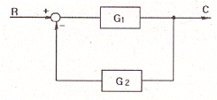
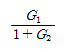
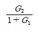
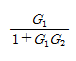
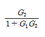
(정답률: 77%)
22. 1C/sec는 다음 중 어느 것과 같은가?
- 1J
- 1V
- 1A
- 1W
(정답률: 65%)
23. 권선수가 100회인 코일을 200회 늘리면 인덕턴스는 어떻게 변화 하는가?
- 1/2로 감소
- 1/4로 감소
- 2배로 증가
- 4배로 증가
(정답률: 61%)
24. 2차계에서 무제동으로 무한 진동이 일어나는 감쇠율(damping ratio) δ는 어떤 경우인가?
- δ=0
- δ>1
- δ=1
- 0<δ<1
(정답률: 77%)
25. 부하저항 R에 5A 의 전류가 흐를 때 소비전력이 500W 이었다. 부하저항 R은?
- 5Ω
- 10Ω
- 20Ω
- 100Ω
(정답률: 66%)
26. 서보전동기는 제어기기의 어디에 속하는가?
- 검출부
- 조절부
- 증폭부
- 조작부
(정답률: 66%)
27. 최대눈금 100mV, 내부저항 20Ω의 직류 전압계에 10kΩ의 배율기를 접속하면 약 몇 V까지 측정 할 수 있는가?
- 50V
- 80V
- 100V
- 200V
(정답률: 63%)
28. 3상 유도전동기를 기동하기 위하여 권선을 Y 결선하면 △ 결선 하였을 때 보다 토크는 어떻게 되는가?
- 1/√3로 감소
- 1/3 로 감소
- 3배로 증가
- √3배로 증가
(정답률: 69%)
29. 교류의 파고율은?
- 실효값/평균값
- 최대값/실효값
- 최대값/평균값
- 실효값/최대값
(정답률: 76%)
30. 1개의 용량이 25W인 객석유도등 10개가 연결되어 있다. 이 회로에 흐르는 전류는 약 몇 A인가? (단, 전원 전압은 220V이고, 기타 선로손실 등은 무시한다.)
- 0.88A
- 1.14A
- 1.25A
- 1.36A
(정답률: 73%)
31. 3상 유도전동기의 기동법 중에서 2차 저항제어법은 무엇을 이용하는가?
- 전자유도작용
- 플레밍의 법칙
- 비례추이
- 게르게스현상
(정답률: 66%)
32. 그림과 같은 변압기 철심의 단면적 A=5cm2, 길이 ㅣ=50㎝, 비투자율 μs=1000, 코일의 감은 횟수 N=200이라 하고 1A의 전류를 흘렸을 때 자계에 축적되는 에너지는 몇 J인가? (단, 누설자속은 무시한다.)
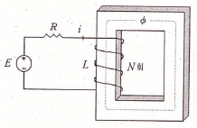
- 2π×10-3
- 4π×10-3
- 6π×10-3
- 8π×10-3
(정답률: 42%)
33. 자동제어에서 미리 정해 놓은 순서에 따라 각 단계가 순차적으로 진행되는 제어방식은?
- 피드백제어
- 서보제어
- 프로그램제어
- 시퀸스제어
(정답률: 75%)
34. P형 반도체네 첨가되는 불순물에 관한 설명으로 옳은 것은?
- 5개의 가전자를 갖는다.
- 억셉터 불순물이라 한다.
- 과잉전자를 만든다.
- 게르마늄에는 첨가할 수 있으나 실리콘에는 첨가가 되지 않는다.
(정답률: 80%)
35. 42.5mH 코일에 60Hz, 220V의 교류를 가할 때 유도 리액턴스는 몇 Ω 인가?
- 16Ω
- 20Ω
- 32Ω
- 43Ω
(정답률: 63%)
36. 제어요소의 구성이 올바른 것은?
- 조절부와 조작부
- 비교부와 검출부
- 설정부와 검출부
- 설정부와 비교부
(정답률: 88%)
37. 다음 무접점 논리회로의 출력 X는?
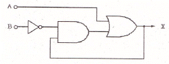
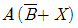
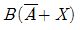
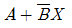
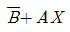
(정답률: 75%)
38. 계측기 접점의 불꽃 제거나 서지 전압에 대한 과입력 보호용으로 사용되는 것은?
- 바리스터
- 사이리스터
- 서미스터
- 트랜지스터
(정답률: 76%)
39. 지시계기에 대한 동작원리가 옳지 않은 것은?
- 열전형 계기 - 대전된 도체 사이에 작용하는 정전력을 이용
- 가동 철편형 계기 - 전류에 의한 자기장이 연철편에 작용하는 힘을 이용
- 전류력계형 계기 - 전류 상호간에 작용하는 힘을 이용
- 유도형 계기 - 회전 자기장 또는 이동 자기장과 이것에 의한 유도전류와의 상호 작용을 이용
(정답률: 77%)
40. 정전용량이 0.5 F인 커패시터 양단에 V=10∠-60° V인 전압을 가하였을 때 흐르는 전류의 순시값은 몇 A 인가? (단,w=30 rad/s 이다.)
- i=150√2sin(30t+30°)
- i=150sin(30t-30°)
- i=150√2sin(30t+60°)
- i=150sin(30t-60°)
(정답률: 39%)
3과목: 소방관계법규
41. 특수가연물의 저장 및 취급의 기준으로서 옳자 않은 것은?
- 특수가연물을 저장 또는 취급하는 장소에는 품명 ㆍ 최대수량 및 화기취급의 금지표지를 설치하여야 한다,
- 품명별로 구분하여 쌓아야 한다.
- 석탄이나 목탄류를 쌓는 경우에는 쌓는 부분의 바닥면적은 20m2 이하가 되도록 하여야 한다,
- 쌓는 높이는 10m 이하가 되도록 하여야 한다.
(정답률: 79%)
42. 소방본부장 또는 소방서장은 함부로 버려두거나 그냥 둔 위험물 또는 물건을 옮겨 보관하는 경우 소방본부 또는 소방서게시판에 보관한 날부터 며칠 동안 공고하여야 하는가?
- 7일 동안
- 14일 동안
- 21일 동안
- 28일 동안
(정답률: 60%)
43. 다음 위험물 중 자기반응성 물질은 어느 것인가?
- 황린
- 염소산염류
- 알카리토금속
- 질산에스테르류
(정답률: 64%)
44. 다음 특정소방대상물에 대한 설명으로 옳은 것은?
- 의원은 근린생활시설이다.
- 동물원 및 식물원은 동식물관련시설이다.
- 종교집회장은 면적에 상관없이 문화집회 및 운동시설이다.
- 철도시설(정비창 포함)은 항공기 및 자동차관련시설이다.
(정답률: 68%)
45. 소방공사 감리원 배치 시 배치일로부터 며칠 이내에 관련서류를 첨주하여 소방본부장 또는 소방서장에게 알려야 하는가?
- 3일
- 7일
- 14일
- 30일
(정답률: 53%)
46. 소방특별조사에 관한 설명이다. 틀린 것은?
- 소방특별조사 업무를 수행하는 관계 공무원 및 관계 전문가는 그 권한을 표시하는 증표를 지니고 이를 관계인에게 내보여야 한다.
- 소방특별법조사 시 관계인의 업무에 지장을 주지 아니 하여야 하나 조사업무를 위해 필요하다고 인정되는 경우 일정부분 관계인의 업무를 중지시킬 수 있다.
- 조사업무를 수행하면서 취득한 자료나 알게된 비밀을 다른 사람에게 재공 또는 누설하거나 목적외의 용도로 사용하여서는 아니 된다.
- 소방특별조사 업무를 수행하는 관계 공무원 및 관계전문가는 관계인의 정당한 업무를 방해하여서는 아니 된다.
(정답률: 76%)
47. 소방시설의 하자가 발생한 경우 통보를 받은 공사업자는 며칠 이내에 이를 보수하거나 보수 일정을 기록한 하자보수 계획을 관계인에게 서면으로 알려야 하는가?
- 3일
- 7일
- 14일
- 30일
(정답률: 67%)
48. 국가는 소방업무에 필요한 경비의 일부를 국고에서 보조한다. 국고보조 대상 소화활동장비 및 설비로서 옳지 않은 것은?
- 소방핼리곱터 및 소방정 구입
- 소방전용 통신설비 설치
- 소방관서 직원숙소 건립
- 소방자동차 구입
(정답률: 83%)
49. 위험물운송자 자격을 취득하지 아니한 자가 위험물 이동탱크저장소 운전 시의 벌칙으로 옳은 것은?(관련 규정 개정전 문제로 여기서는 기존 정답인 4번을 누르면 정답 처리됩니다. 자세한 내용은 해설을 참고하세요.)
- 50만원 이하의 벌금
- 100만원 이하의 벌금
- 200만원 이하의 벌금
- 300만원 이하의 벌금
(정답률: 71%)
50. 소방기본법에 규정된 화재조사에 대한 내용이다. 틀린 것은?
- 화재조사 전담부서에는 발굴용구, 기록용기기, 감식용기기, 조명기기, 그 밖의 장비를 갖추어야 한다.
- 소방방재청장은 화재조사에 관한 시험에 합격한 자에게 3년마다 전문 보수교육을 실시하여야 한다.
- 화재의 원인과 피해조사를 위하여 소방방재청, 시 ㆍ 도의 소방본부와 소방서에 화재조사를 전담하는 부서를 설치 운영한다.
- 화재조사는 장비를 활용하여 소화활동과 동시에 실시 되어야 한다.
(정답률: 70%)
51. 자동화재 탐지설비를 화재안전기준에 적합하게 설치한 경우에 그 설비의 유효범위 내에서 설치가 면제되는 소방시설로서 옳은 것은?
- 비상경보설비
- 누전경보기
- 비상조명등
- 무선통신 보조설비
(정답률: 72%)
52. 공동 소방안전관리자를 선임하여야 하는 특정소방대상물의 기준으로 옳지 않은 것은?
- 소매시장
- 도매시장
- 3층 이상인 학원
- 연면적이 5000m2 이상인 복합건물
(정답률: 79%)
53. 건축물 등의 신축 ㆍ 증축 동의요구를 소재지 관할 소방본부장 또는 소방서장에게 한 경우 소방본부장 또는 소방서장은 건축허가 등의 동의요구서류를 접수한 날부터 몇일 이내에 건축허가 등의 동의여부를 회신하여야 하는가? (단, 허가 신청한 건축물이 연면적이 20만m2 이상의 특정소방대상물인 경우이다.)
- 5일
- 7일
- 10일
- 30일
(정답률: 68%)
54. 아파트로서 층수가 몇 층 이상인 것은 모든 층에 스프링클러를 설치하여야 하는가?(관련 규정 개정전 문제로 여기서는 기존 정답인 2번을 누르면 정답 처리됩니다. 자세한 내용은 해설을 참고하세요.)
- 6층
- 11층
- 15층
- 20층
(정답률: 73%)
55. 소방시설공사가 설계도서나 화재안전기준에 맞지 아니 할 경우 감리업자가 가장 우선하여 조치하여야 할 사항은?
- 공사업자에게 공사의 시정 또는 보완을 요구하여야 한다.
- 공사업자의 규정위반 사실을 관계인에게 알리고 관계인으로 하여금 시정 요구토록 조치한다.
- 공사업자의 규정위반 사실을 발견 즉시 소방본부장 또는 소방서장에게 보고한다,
- 공사업자의 규정위반 사실을 시 ㆍ 도지사에게 신고한다.
(정답률: 64%)
56. 다음 중 특수가연물에 해당되지 않은 것은?
- 800kg 이상의 종이부스러기
- 1000kg 이상의 볏짚류
- 1000kg 이상의 사류(絲類)
- 400kg 이상의 나무껍질
(정답률: 75%)
57. 제조소 중 위험물을 취급하는 건축물은 특수한 경우를 제외하고 어떤 구조로 하여야 하는가?
- 지하층이 없는 구조이어야 한다.
- 지하층이 있는 구조이어야 한다.
- 지하층이 있는 1층 이내의 건축물이어야 한다.
- 지하층이 있는 2층 이내의 건축물이어야 한다.
(정답률: 78%)
58. 방염업을 운영하는 방염업자가 규정을 위반하여 다른 사람에게 등록증 또는 등록수첩을 빌려준 때 받게 되는 행정처분기준으로 옳은 것은?(관련 규정 개정전 문제로 여기서는 기존 정답인 1번을 누르면 정답 처리됩니다. 자세한 내용은 해설을 참고하세요.)
- 1차 - 등록 취소
- 1차 - 경고(시정명령), 2차-영업정지 6개월
- 1차 - 영업정지 3개월, 2차 - 등록 취소
- 1차 - 경고(시정명령). 2차 - 등록 취소
(정답률: 76%)
59. 소방방재청장은 방염대상물품의 방염성능검사 업무를 어디에 위탁 할 수 있는가?
- 한국소방공사협회
- 한국소방안전협회
- 소방산업공제조합
- 한국소방산업기술원
(정답률: 75%)
60. 소방시설의 지위를 승계한 자는 그 지위를 승계한 날부터 30일 이내에 상속인, 영업을 양수한 자와 시설의 전부를 인수한 자의 경우에는 소방시설업 지위승계신고서에, 합병후 존속하는 법인 또는 합병에 의하여 설립되는 법인의 경우에는 소방시설업 합병신고서에 서류를 첨부하여 시 ㆍ 도지사에게 제출하여야 한다. 제출서류에 포함하지 않아도 되는 것은?
- 소방시설업 등록증 및 등록수첩
- 영엽소 위치, 면적 등이 기록된 등기부 등본
- 계약서 사본 등 지위계승를 증명하는 서류
- 소방기술인력 연명부 및 기술자격증 ㆍ 자격수첩
(정답률: 62%)
4과목: 소방전기시설의 구조 및 원리
61. 누전경보기의 변류기의 설치 위치는?
- 옥외인입선 제1지점 부하측의 점검이 쉬운 위치
- 옥내인입선 제1지점 부하측의 점검이 쉬운 위치
- 옥외인입선 제1종 접지선측의 점검이 쉬운 위치
- 옥내인입선 제1종 접지선측의 점검이 쉬운 위치
(정답률: 62%)
62. 비상방송설비의 설치기준으로 틀린 것은
- 확성기의 음성입력은 1W(실내에 설치하는 것에 있어서는 3W) 이상 일 것
- 확성기는 각 층마다 설치하되, 그 층의 각 부분으로부터 하나의 확성기까지의 수평거리가 25m이하가 되도록하고, 해당층의 각 부분에 유효하게 경보를 발할 수 있도록 설치 할 것
- 음량조정기를 설치하는 경우 음량조정기의 배선은 3선식으로 할 것
- 기동장치에 의한 화재신고를 수신한 후 필요한 음량으로 피난에 유효한 방송이 자동으로 개시될 때까지의 소요 시간은 10초 이하로 할 것
(정답률: 82%)
63. 자동화재탐지설비의 경계구역설정 기준으로 옳은 것은?
- 하나의 경계구역이 3개이상의 건축물에 미치지 아니 하도록 할 것
- 하나의 경계구역의 면적은 500m2 이하로 하고 한 변의 길이는 60m 이하로 할 것
- 지하구의 경우 하나의 경계구역의 길이는 700m 이하로 할 것
- 800m2 이하의 범위 안에서는 2개 층을 하나의 경게구역으로 할 것
(정답률: 74%)
64. 자동화재탐지설비에서 특정배선은 전자파방해를 방지하기 위하여 쉴드선을 사용해야 한다. 그 대상이 아닌 것은?
- R형 수신기
- 복합형 감지기
- 다신호식 감지기
- 아날로그식 감지기
(정답률: 43%)
65. 비상방송설비의 음향장치 설치기준으로 옳지 않은 것은?
- 음량조정기를 설치하는 경우 음량조정기의 배선은 3선식으로 할 것
- 다른 방송설비와 공요하는 것에 있어서는 화재 시 비상경보외의 방송을 차단할 수 있는 구조로 할 것
- 기동장치에 따른 화재신고를 수신한 후 필요한 음량으로 화재발생 상황 및 피난에 유효한 방송이 자동으로 개시될 때까지의 소요시간은 20초 이하로 할 것
- 조작부는 기동장치의 작동과 연동하여 담해 기동장치가 작동한 층 또는 구역을 표시할 수 있는 것으로 할 것
(정답률: 85%)
66. 다음은 자동화재속보설비의 속보기 예비전원용 연축전지의 주위온도 충 ㆍ 방전시험에 관한 설명이다. ( )안의 알맞은 내용은?
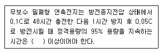
- 20분
- 30분
- 50분
- 60분
(정답률: 54%)
67. 복도통로유도등의 설치기준으로 옳지 않은 것은?
- 복도에 설치 할 것
- 구부로진 모퉁이 및 보행거리 15m 마다 설치 할 것
- 바닥으로부터 높이 1m 이하의 위치에 설치 할 것
- 바닥에 설치하는 통로유도등은 하중에 따라 파괴되지 아니하는 강도의것으로 할 것
(정답률: 73%)
68. 부착높이가 15m 이상 20m 미만일 경우 적응성이 없는 감지기는?
- 차동식 분포형
- 이온화식 1종
- 광전식(스포트형) 1종
- 불꽃감지기
(정답률: 63%)
69. 무선통신보조설비의 주회로 전원이 정상인지 여부를 확인하기 위해 증폭기 전면에 설치하는 것은?
- 전압계 및 전류게
- 전압계 및 표시등
- 상순계
- 전류계
(정답률: 84%)
70. 자동화재탐지설비 전원회로의 전로와 대지사이 및 배선 상호간의 절연저항 기준은?
- DC 250V, 0.1MΩ이상
- DC 250V, 0.2MΩ이상
- DC 500V, 0.1MΩ이상
- DC 500V, 0.2MΩ이상
(정답률: 71%)
71. 예비전원 설치와 관련한 설명으로 옳지 않은 것은?
- 앞면에는 예비전원의 상태를 감시할 수 있는 장치를 하여야 한다.
- 예비전원을 경보기의 주 전원으로 사용한다.
- 축전지를 병렬로 접속하는 경우에는 역충전 방지 등의 조치를 강구하여야 한다.
- 예비전원을 단락사고 등으로부터 보호하기 위한 퓨즈 또는 과전류 보호장치를 설치하여야 한다.
(정답률: 76%)
72. 하나의 전용회로에 단상 교류 비상콘센트 6개를 연결하는 경우 전선의 용량은?
- 1.5 kVA이상
- 3 kVA이상
- 4.5 kVA이상
- 9 kVA이상
(정답률: 65%)
73. 비상콘센트설비의 설치기준으로 옳지 않은 것은?
- 비상콘센트는 지하층 및 지상 8층 이상의 전층에 설치 할 것
- 비상콘센트는 바닥으로부터 높이 0.8m 이상 1.5m 이하의 위치에 설치 할 것
- 비상콘센트설비의 전원부와 외함 사이의 절연저항은 500V 절연저항계로 측정할 때 20MΩ 이상일 것
- 전원으로부터 각 층의 비상콘센트에 분기되는 경우에는 분기배선용 차단기를 보호함 안에 설치 할 것
(정답률: 70%)
74. 다음 ( ) 안에 공통으로 들어갈 내용으로 옳은 것은?
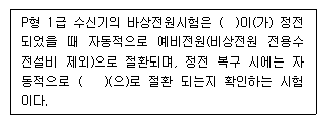
- 감지기
- 표시기전원
- 충전전원
- 상용전원
(정답률: 84%)
75. 비상방송설비에서 연면적은 3000m2을 초과하는 특정소방대상물로 몇 층 이상인 경우 우선경보방식을적용할 수 있는가?
- 2층
- 3층
- 4층
- 5층
(정답률: 58%)
76. 객석 통로에서 직선부분의 길이가 20m인 경우 객석유도등의 설치개수는?
- 3개
- 4개
- 5개
- 6개
(정답률: 73%)
77. 자동화재탐지설비를 설치하여야 하는 특정소방대상물에 대한 설명 중 옳은 것은?
- 위락시설, 숙박시설, 의료시설로서 연면적 500m2 이상인 것
- 근린생활 시설 중 목욕장, 문화집회 및 운동시설, 통신 촬영시설로 연면적 600m2 이상인 것
- 지하구
- 길이 500m 이상의 터널
(정답률: 51%)
78. 비상벨설비 또는 자동사이렌설비의 지구음량장치는 특정소방대상물의 층마다 설치하되, 해당 특정소방대상물의 각 부분으로부터 하나의 음향장치까지의 수평거리가 몇 m이하가 되도록 하여야 하는가?
- 25m 이하
- 30m 이하
- 40m 이하
- 50m 이하
(정답률: 81%)
79. 공연장 및 집회장에 설치하여야 할 유동등의 종류로 옳은 것은?
- 대형피난구유도등, 통로유도등, 객석유도등
- 중형피난구유도등, 통로유도등
- 소형피난구유도등, 통로유도등
- 피난구유도표지, 통로유도표지
(정답률: 82%)
80. 누전경보기의 전원의 기준으로 틀린 것은?
- 전원은 분전반으로부터 전용회로로 할 것
- 전원의 개폐기에는 누전경보기용임을 표시한 표지를 할 것
- 전원을 분기할 때에는 다른 차단기에 따라 전원이 차단되지 아니하도록 할 것
- 각 극에 개폐가 또는 15A 이하의 배선용차단기를 설치 할 것
(정답률: 77%)